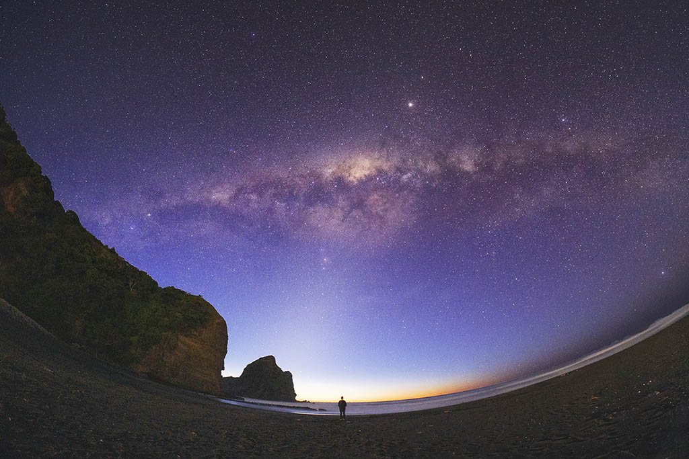
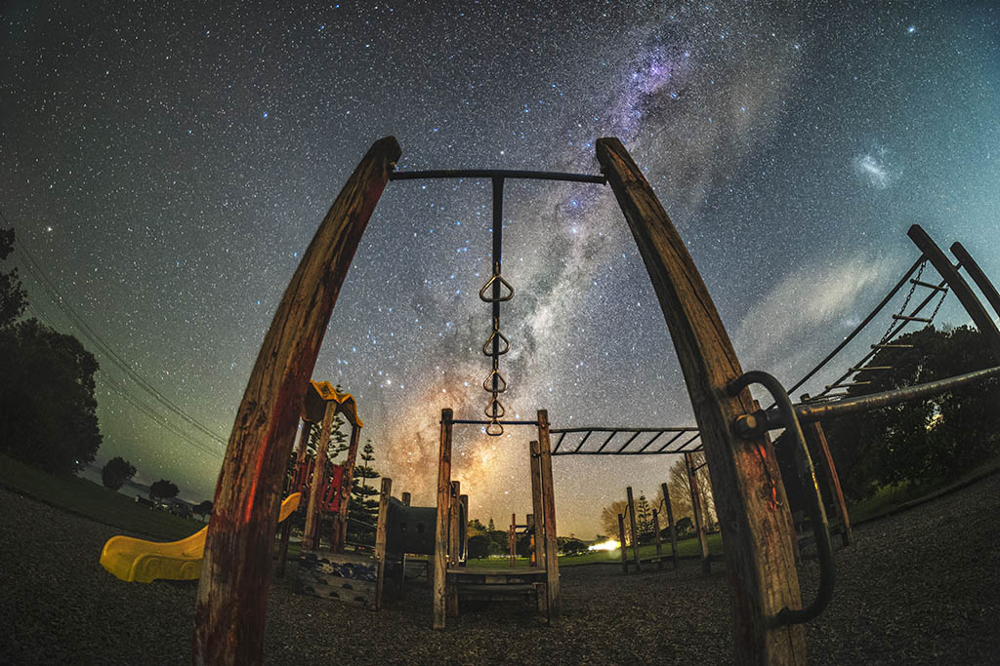
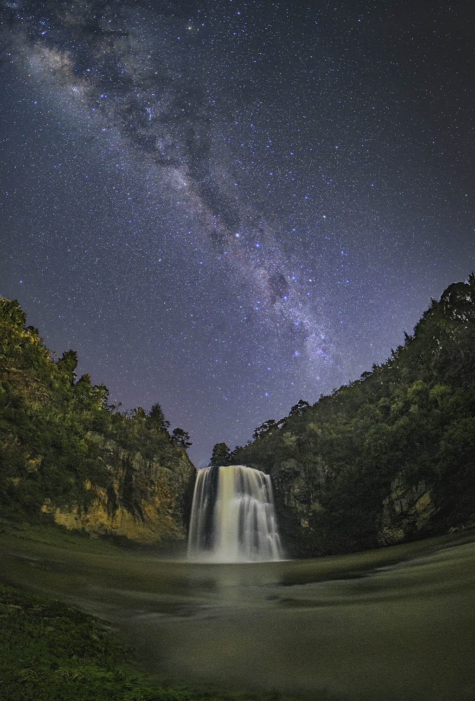

Astrophotography includes many directions such as star field, deep space, etc. Here we mainly talk about star field photography.
Time and place
Generally speaking, it is difficult to photograph stars in cities with bright lights and heavy air pollution. If you want to take a dreamy starry sky, it is best to choose the suburbs and mountains far away from the city to avoid the interference of surrounding light sources.
As for the shooting time, we'd better choose at the beginning or end of the month when it is clear and cloudless. This is to avoid the large and bright moon in the middle. Bright moonlight can seriously interfere with the starlight in the sky.
Equipment
Starry sky photography requires high image quality, so we usually choose a body with good high sense and good tolerance. Some entry-level cameras can also shoot, but the picture quality performance will be relatively bleak.
Because starry sky photography requires foreground suffixes, and at the same time needs to capture as many stars as possible as a basic shooting idea, ultra-wide-angle lenses or even fisheye lenses are often used as common lenses.
On the other hand, since starry sky photography is mostly shot in dark environments, the larger the aperture, the greater the advantage of the lens (the larger the aperture, the greater the amount of light entering the lens, you can use a lower ISO to shoot in the same light environment to get better picture quality)
Therefore, the commonly selected focal length is roughly between 12-40 (12-24/14-24/15-30/16-35/17-40 and other more common ultra-wide-angle focal lengths on the market), and the aperture The larger the wide-angle lens, the more advantageous it is. For common single shots, lenses like 14-24 2.8 & 16-35 2.8, or fisheye lenses are often chosen.
A stable tripod system is essential for shooting starry sky exposures of about 20 seconds and star trails for tens of minutes or even hours. The tripod is made of wood, high-strength plastic, alloy, steel and carbon fiber. The most efficient carbon fiber material on the market today, lightweight, tough and strong!
The camera shutter cable, as the name suggests, is the remote control cable that controls the shutter. Remote control of taking pictures, exposure, continuous shooting, whether it is a traditional camera or a digital camera, we will all have camera shake due to the instability of the hand when pressing the shutter, destroying the integrity of the picture and reducing the quality of the picture. A good way to avoid this from happening is to use a "switch release". It is especially convenient for shooting star trails or time-lapse themes. Of course, some cameras now also have built-in delayed exposure and time-lapse shooting systems.
How to shoot
Focusing
Due to the limited focusing ability of the camera itself, it is difficult for us to focus successfully in the dark night. Therefore, when shooting the starry sky, we often turn off the autofocus and manually adjust the focus to infinity according to the focusing window of the observation lens. The infinity mark of most lenses generally has a certain deviation from the actual infinity, so we often use the back screen to find bright stars to manually focus. The method is as follows: open the real-time display of the camera's back screen, zoom in and find a brighter star, manually rotate the focus ring, and focus successfully when the star changes from a fuzzy circle to a solid star point. .
exposure
The exposure of the starry sky follows the "500 rule". The "500" rule is the calculation method of exposure time in starry sky photography. Simply divide 500 by the focal length of the lens (full-frame focal length), and the resulting number is the longest shutter time you can use.
aperture
In order to get enough light in when we shoot the starry sky, we usually use the maximum aperture. For example, the zoom lens of F2.8 or F4 is directly opened to the maximum f2.8 or f4, while the large-aperture fixed-focus lens such as the Sigma 14 1.4 will close some apertures to obtain better image quality.
ISO
Choose according to the darkness of the sky. The sensitivity of the Milky Way is usually 2000-6400, and occasionally 1600 is used. Shooting starry sky requires such a sensitivity. If you are shooting star trails, you can directly adjust the sensitivity to 100 (Nikon D810 or 850 can choose the lowest 64), because it takes dozens of minutes or even hours to shoot star trails. Under the time exposure, the camera can capture enough bright light, if high ISO is used, the picture must be overexposed.
White balance
In raw format, the white balance can be set automatically, or manually set to 3000-4000 (the lower the color temperature value in the camera, the cooler the color of the photo, the bluer the color; conversely, the warmer the color, the more yellow the color).The starry sky under different white balance color temperatures has a great contrast between cold and warm colors, giving people a completely different feeling!
Composition skills
In star photography, the combination of foreground and distant view is very important. Generally speaking, when we shoot the starry sky, we can choose distant mountains, observatories, cars with high beams, tents with lights, or even people holding flashlights, all of which can be very good in our starry works. embellishment.
In addition, if you have time, you can also arrive at the night sky shooting location in advance during the day, choose a good camera position, and go to the shooting at night to get twice the result with half the effort.
 Contact me
Contact me